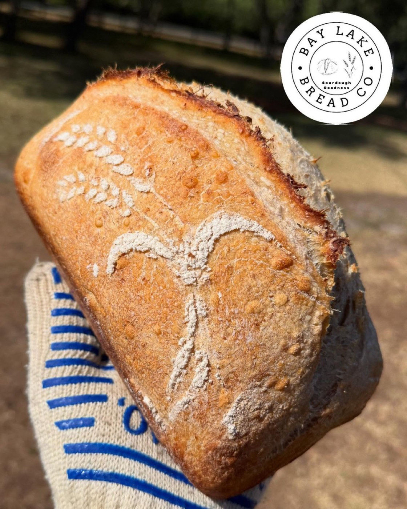
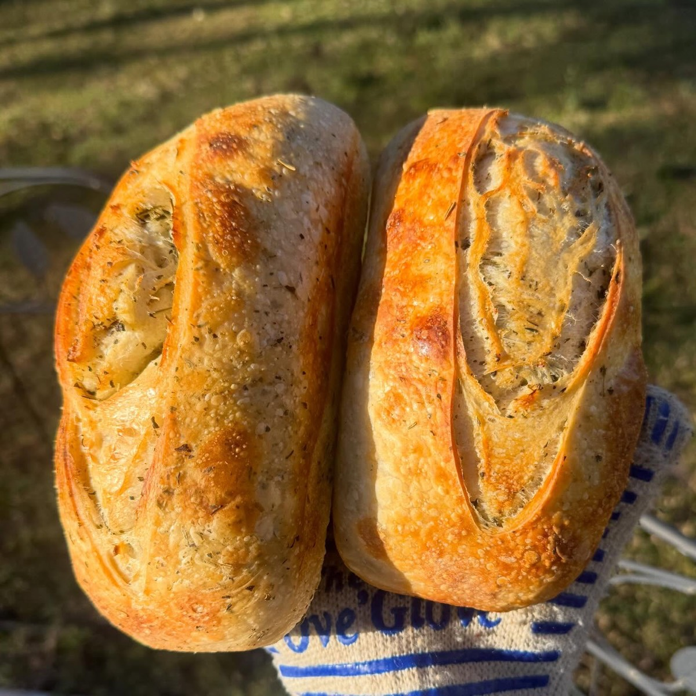
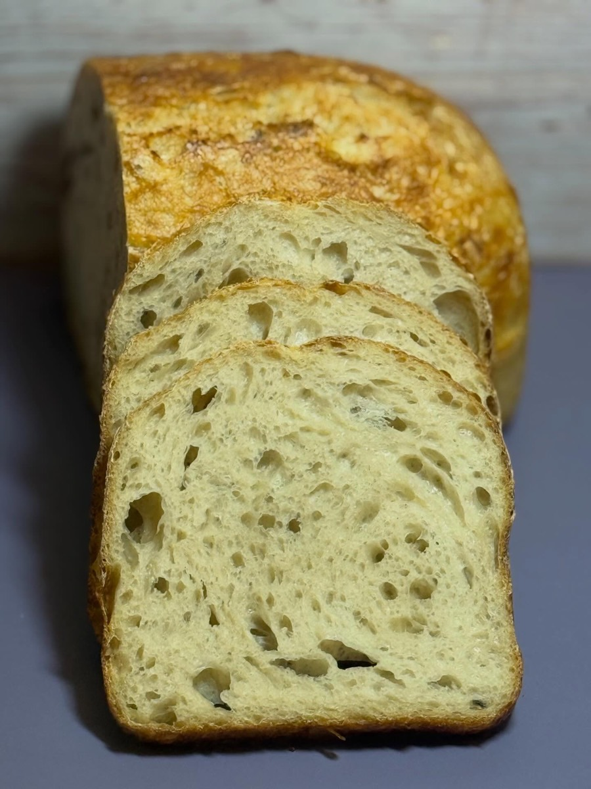

Um fermento vivo
É o fermento natural vivo que faz o pão crescer, no lugar do fermento de pacote. É isso que dá a acidez e a durabilidade da fermentação natural.
St. Cloud · Harmony · Grande Orlando
Somos uma micropadaria de mãe e filha que assa pães de fermentação natural, focaccia, biscoitos e granola em pequenas fornadas. Farinha, água, sal e tempo. Nada que você não saiba pronunciar.

Por que o sabor é diferente
Cada pão começa com um fermento natural vivo que alimentamos à mão e depois fermenta devagar, para o sabor ter tempo de se formar e o pão ficar mais leve para o intestino.
É o fermento natural vivo que faz o pão crescer, no lugar do fermento de pacote. É isso que dá a acidez e a durabilidade da fermentação natural.
Fermentações longas e frias, sem atalhos. É daí que vêm o miolo aberto, a casca craquelada e o sabor.
Farinha, água, sal e manteiga de verdade, frutas ou queijo quando a receita pede. Limpo, honesto, nada escondido.
Assamos o que conseguimos fazer bem, à mão, na nossa própria cozinha. Se acabar, acabou, e logo vem a próxima fornada.
O que assamos
Estes são os itens que voltam sempre. Cada fornada tem a sua própria lista, então confira o cardápio atual antes de pedir.



Como pedir
Em vez de manter uma loja aberta todo dia, abrimos uma fornada para pedidos, assamos na hora e você retira no Bread Shed.
Anunciamos cada cardápio no Instagram e por e-mail. Assine na nossa página de pedidos para não perder nenhuma.
Escolha seus pães e doces online, escolha um horário de retirada e pague de uma vez. Os preferidos acabam rápido.
Passe no Bread Shed no dia da retirada. Tudo ensacado, etiquetado e ainda com cheiro de forno.
Nossa história
O que começou como um passatempo divertido com a Hailey virou uma padaria de pequenas fornadas, cheia de carinho, sabor e coisa boa para o intestino.
Assamos na nossa própria cozinha em St. Cloud e atendemos os vizinhos aqui e na feira de produtores de Harmony. Tudo é misturado, modelado e cortado à mão, por isso nenhum pão fica exatamente igual ao outro, e por isso mesmo não queremos de outro jeito.
Obrigada por apoiar o nosso pequeno sonho.
Já provei outros pães de fermentação natural e nada se compara a este sabor. Karlyn I., sobre o pão branco clássico


Visite
Nosso pequeno quiosque de retirada fica ali na casa, e nós mesmos o construímos ao longo de três meses. Os pedidos ficam prontos esperando no dia da retirada, e quase sempre tem algo a mais na prateleira.
O que dizem
“O de ervas de Provence está incrível!!!!”
“Perigosamente e consistentemente delicioso. Compramos quase toda semana!”
“Sabor ótimo e a praticidade é imbatível!”
Bom saber
Guarde em temperatura ambiente, num saco de papel ou de pão, e corte do meio para fora, apoiando o pão sobre o lado cortado. Não leve à geladeira. Para durar mais, fatie antes e congele, depois torre direto do congelador.
Guarde em temperatura ambiente, num pote hermético, por 2 a 3 dias, ou na geladeira por até 5 dias. Para mais tempo, congele bem embalada por até um mês. Para esquentar, leve ao forno a 150°C por 5 a 10 minutos, ou ao micro-ondas por 10 a 15 segundos, até ficar macia e quente.
Não, porque amamos os benefícios para a saúde e o sabor da fermentação natural. Ela é o coração de tudo o que assamos.
Peça assim que a fornada abrir, porque os preferidos saem rápido. A focaccia precisa de cerca de 48 horas de aviso, então mande mensagem antes para essa.
St. Cloud e a região da Grande Orlando. A retirada é no Bread Shed, no dia anunciado em cada fornada, e você também nos encontra na feira de produtores de Harmony.
Venha dizer oi
O cardápio, as datas de retirada e uma boa dose de massa aparecem primeiro no Instagram.